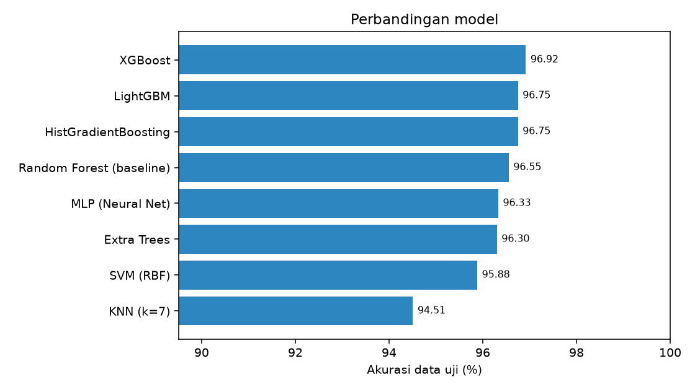
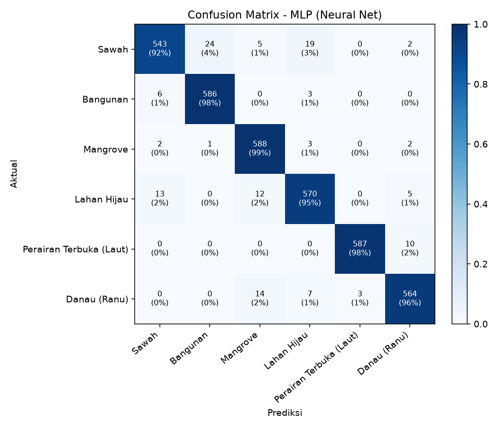
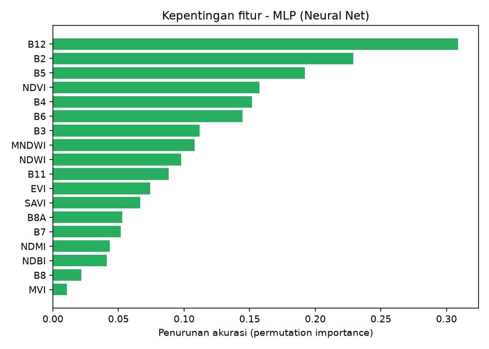
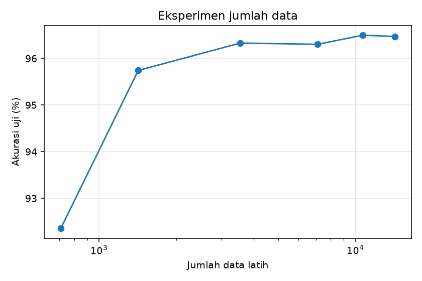
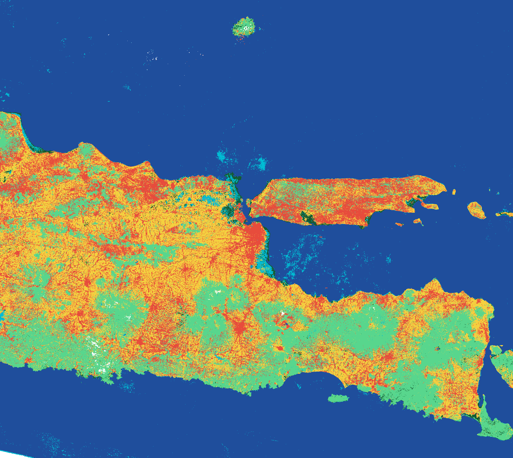

Klasifikasi Penggunaan Lahan Jawa Timur (Sentinel-2A)#
1. Data Understanding dan Tujuan Analisis#
Memetakan penutup/penggunaan lahan (land use & land cover, LULC) Provinsi Jawa Timur dari citra Sentinel-2A menjadi 6 kelas: sawah, bangunan, mangrove, lahan hijau, perairan terbuka (laut), dan danau (ranu).
Membandingkan beberapa algoritma klasifikasi terbimbing (Random Forest sebagai baseline, XGBoost, LightGBM, SVM, dll.) dan memilih model dengan akurasi tertinggi.
Menyajikan hasil klasifikasi sebagai sistem informasi geografis berbasis web (Folium/Leaflet di Streamlit) di atas basemap satelit Google, sebagai dasar analisis spasial penggunaan lahan dan kebijakan tata ruang (mis. pemantauan alih fungsi sawah, perlindungan mangrove, dan kawasan terbangun).
2. Pengumpulan Data#
Label: 6 file GeoJSON poligon sampel, masing-masing 60 poligon (total 360), tersebar di Jawa Timur.
Citra: Sentinel-2A Level-2A (
COPERNICUS/S2_SR_HARMONIZED) di Google Earth Engine, tahun 2025, filterSPACECRAFT_NAME = Sentinel-2A, masking awan Cloud Score+ (cs_cdf >= 0,6), komposit median, reflektansi dibagi 10.000.Ekstraksi: 50 titik acak per poligon (10 m), nilai 10 band dan 8 indeks per titik, diekspor ke CSV.
Pembersihan: buang nilai kosong/tak hingga, batasi indeks rasio (EVI, MVI), seimbangkan jumlah titik per kelas.
Pembagian data: train/test dipisah per poligon (80:20) untuk mencegah kebocoran spasial.
3. Band Sentinel-2A#
Band |
Nama |
Panjang gelombang (nm) |
Resolusi (m) |
Kegunaan |
Dipakai |
|---|---|---|---|---|---|
B1 |
Coastal aerosol |
442.7 |
60 |
Koreksi aerosol atmosfer, perairan pesisir |
Tidak |
B2 |
Blue |
492.4 |
10 |
Pembeda air jernih, tanah, vegetasi; penyusun EVI |
Ya |
B3 |
Green |
559.8 |
10 |
Puncak pantulan vegetasi hijau; NDWI/MNDWI/MVI |
Ya |
B4 |
Red |
664.6 |
10 |
Penyerapan klorofil; NDVI/EVI/SAVI |
Ya |
B5 |
Vegetation red edge 1 |
704.1 |
20 |
Kondisi/kandungan klorofil vegetasi |
Ya |
B6 |
Vegetation red edge 2 |
740.5 |
20 |
Struktur kanopi, pembeda tipe vegetasi |
Ya |
B7 |
Vegetation red edge 3 |
782.8 |
20 |
Struktur kanopi, biomassa |
Ya |
B8 |
NIR |
832.8 |
10 |
Pantulan tinggi vegetasi, serapan air |
Ya |
B8A |
Narrow NIR |
864.7 |
20 |
NIR sempit, sensitif terhadap vegetasi |
Ya |
B9 |
Water vapour |
945.1 |
60 |
Koreksi uap air atmosfer |
Tidak |
B10 |
SWIR - Cirrus |
1373.5 |
60 |
Deteksi awan cirrus (tidak ada di produk L2A) |
Tidak |
B11 |
SWIR 1 |
1613.7 |
20 |
Kadar air tanah/vegetasi, lahan terbangun; NDBI/MNDWI/NDMI |
Ya |
B12 |
SWIR 2 |
2202.4 |
20 |
Pembeda tanah terbuka, lahan terbangun, air |
Ya |
B1, B9, B10 tidak dipakai (koreksi atmosfer/deteksi awan, resolusi 60 m; B10 tidak ada di produk L2A).
4. Skema Kelas dan Acuan Klasifikasi Lahan Indonesia#
Mengacu pada SNI 7645-1:2014 dan klasifikasi penutup lahan KLHK (23 kelas), diagregasi menjadi 6 kelas.
ID |
Kelas |
Warna |
Padanan klasifikasi Indonesia |
|---|---|---|---|
1 |
Sawah |
#f4d03f |
Sawah (pertanian lahan basah) - kelas ‘Sawah’ KLHK |
2 |
Bangunan |
#e74c3c |
Permukiman / lahan terbangun - kelas ‘Permukiman’ KLHK; ‘Daerah terbangun’ SNI 7645 |
3 |
Mangrove |
#145a32 |
Hutan mangrove (primer/sekunder) - kelas ‘Hutan Mangrove’ KLHK |
4 |
Lahan Hijau |
#58d68d |
Gabungan vegetasi non-sawah: hutan lahan kering, perkebunan, pertanian lahan kering, semak belukar, padang rumput |
5 |
Perairan Terbuka (Laut) |
#1f4e9c |
Tubuh air - perairan laut (SNI 7645: ‘Perairan’) |
6 |
Danau (Ranu) |
#00bcd4 |
Tubuh air - perairan darat/danau (SNI 7645: ‘Perairan’) |
5. Fitur dan Rumus#
Total 18 fitur: 10 band (B2, B3, B4, B5, B6, B7, B8, B8A, B11, B12) dan 8 indeks.
Fitur |
Rumus |
Keterangan |
|---|---|---|
NDVI |
|
Normalized Difference Vegetation Index. Tinggi pada vegetasi lebat (mangrove, lahan hijau), rendah/negatif pada air dan bangunan. |
NDWI |
|
Normalized Difference Water Index (McFeeters). Positif pada badan air. |
MNDWI |
|
Modified NDWI (Xu). Lebih baik memisahkan air dari lahan terbangun. |
NDBI |
|
Normalized Difference Built-up Index. Tinggi pada area terbangun. |
NDMI |
|
Normalized Difference Moisture Index. Kelembapan vegetasi; membantu pembeda sawah tergenang. |
EVI |
|
Enhanced Vegetation Index. Tidak mudah jenuh pada vegetasi rapat; reflektansi skala 0-1. |
SAVI |
|
Soil Adjusted Vegetation Index (L = 0,5). Mengurangi pengaruh latar tanah. |
MVI |
|
Mangrove Vegetation Index (Baloloy dkk., 2020). Menonjolkan mangrove terhadap vegetasi lain. Nilai dibatasi -20 s.d. 20. |
6. Jumlah Data dan Kelas#
Jumlah kelas 6, data latih 14227, data uji 3569.
Kelas |
Poligon |
Titik (bersih) |
Train |
Test |
|---|---|---|---|---|
Sawah |
60 |
3000 |
2373 |
593 |
Bangunan |
60 |
3000 |
2371 |
595 |
Mangrove |
60 |
3000 |
2370 |
596 |
Lahan Hijau |
60 |
2966 |
2366 |
600 |
Perairan Terbuka (Laut) |
60 |
3000 |
2369 |
597 |
Danau (Ranu) |
60 |
3000 |
2378 |
588 |
7. Perbandingan Model#
Model |
CV akurasi (%) |
Akurasi uji (%) |
F1-macro uji (%) |
Kappa |
|---|---|---|---|---|
Random Forest (baseline) |
91.22 ± 1.75 |
96.55 |
96.55 |
0.9586 |
Extra Trees |
91.41 ± 1.76 |
96.30 |
96.29 |
0.9556 |
HistGradientBoosting |
91.92 ± 1.57 |
96.75 |
96.74 |
0.9610 |
SVM (RBF) |
92.72 ± 1.80 |
95.88 |
95.87 |
0.9506 |
KNN (k=7) |
90.26 ± 2.45 |
94.51 |
94.48 |
0.9341 |
MLP (Neural Net) (terbaik) |
92.97 ± 1.84 |
96.33 |
96.32 |
0.9560 |
XGBoost |
92.19 ± 1.54 |
96.92 |
96.91 |
0.9630 |
LightGBM |
92.13 ± 1.52 |
96.75 |
96.74 |
0.9610 |
Model terbaik (dipilih dari CV data latih): MLP (Neural Net), akurasi uji 96.33%, kappa 0.9560.

8. Evaluasi Model Terbaik#


9. Eksperimen Jumlah Data#
Fraksi data latih |
Jumlah |
Akurasi uji (%) |
|---|---|---|
5% |
708 |
92.35 |
10% |
1420 |
95.74 |
25% |
3554 |
96.33 |
50% |
7112 |
96.30 |
75% |
10667 |
96.50 |
100% |
14227 |
96.47 |

10. Hasil Klasifikasi dan Luas Kelas#

Kelas |
Luas (ha) |
|---|---|
Sawah |
2,083,511 |
Bangunan |
1,456,680 |
Mangrove |
111,165 |
Lahan Hijau |
1,920,501 |
Perairan Terbuka (Laut) |
9,211,124 |
Danau (Ranu) |
146,830 |
Luas bersifat indikatif karena dihitung dari raster kasar.